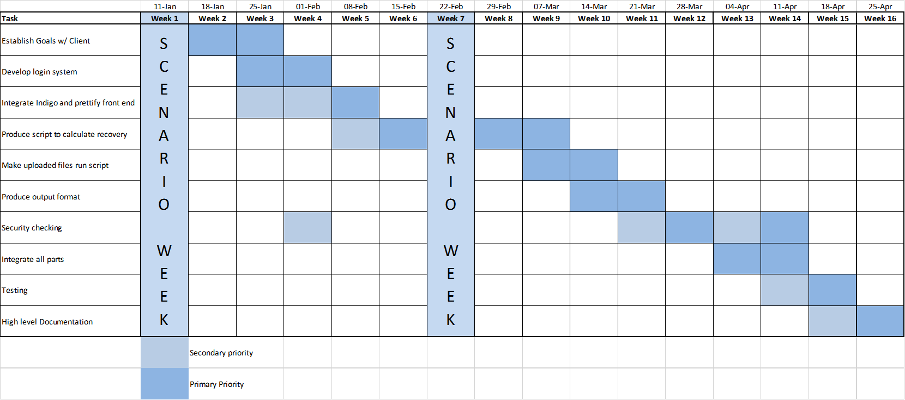

COMP204P: OCT-DEC
A record of the progress of our project shall be outlined in a table below, separated into the two halves of the project.
The first half of the project has been primarily aimed at research and prototyping. We have carried out sufficient research into what our clients want and presented them in the form of MoSCoW style requirements. Some prototypes have been created on the user interface with Use Cases and HCI analysis carried out on them to ensure the requirements have been fulfilled. As well as this, we have produced some scripts to be run on the server side of the web application to be produced.
Please click on the download link below to see a more in depth record of each work package shown in the table.
| Task No | Task | Start Date | End Date |
|---|---|---|---|
| 1 | Project Management | 7/10/15 | 11/12/15 |
| 2 | Gathering Requirements | 16/10/15 | 26/11/15 |
| 3 | Server Side Automation | 20/10/15 | 24/11/15 |
| 4 | Prototypes | 19/11/15 | 11/12/15 |
| 5 | Use Cases & HCI Analysis | 26/11/15 | 10/12/15 |
COMP205P: JAN-APR
During the second half of the project we worked on coding the front end and linking it to the server side whilst generating actual predictions. This was done by having each person in the group concentrating on a specific section which were the Django front end, virtual machine back end and the spreadsheet predictions. These were then linked together to produce a working web application that fulfilled all of the Must have, Should have and Could have requirements. The end result means a user can simply upload their fMRI brain scan and retrieve their prediction without needing to manually complete any other tasks.
| Task No | Task | Start Date | End Date |
|---|---|---|---|
| 1 | Project Management | 12/01/16 | 27/04/16 |
| 2 | Django Application | 19/01/16 | 19/04/16 |
| 3 | Prediction Spreadsheets | 26/01/16 | 04/04/16 |
| 4 | Virtual Machine Back End | 07/03/16 | 18/04/16 |
A gantt chart can be seen below outlining the work packages that have been completed throughout the term.
For our project, we distributed the workload evenly amongst us, with specific primary tasks for each team member. In order to do this, we came up with a list of work packages with different priorities. This list was not definite and was changing throughout the project as new and unexpected tasks appeared. Throughout the project, we constantly met up and allocated new tasks, discussed issues we had and worked together to complete the more challenging tasks. This ended up being a great method for us as we never felt that we were behind on work at any point during the term. Each team member’s work packages that were completed can be seen below.
Jedrzej Stuczynski
During the first part of the project, which is during COMP204P, I was designated to work on the automation scripts in MATLAB. First, I had to familiarise myself with the original scripts PLORAS wanted automated and then I used the inbuilt toolbar batch system. For each step required in the processing I have encapsulated the required functionality into separate functions with one master function that is responsible for controlling the process.
After that, when the Django front end was created, I worked on a bridge between the automation scripts and the front end. I created a python script that would initialise processing images for a given patient whenever a job to do so was submitted. When a user submits a new job, it adds it to the associated application database. We then use functionalities of crontab, in Linux, to call every few minutes where a python script checks if there are any jobs to process and if so, it processes it. I have implemented mechanisms for checking if the processing of a certain job is in progress to prevent concurrency issues. We also skip jobs if for some reason they failed.
Then, when we finally had a working local version of the system, I was responsible for putting it all on the Virtual Machine that was provided to us by our client. There were a number of issues to overcome in this part, such as making Apache work with mod_wsgi, solving permission problems with SELinux and making it possible to save files in an appropriate location. Then it was a matter of correctly setting up a crontab job that was described in the paragraph above.
Farbas Miah
For COMP204P, my main job was of producing the documentation for the group. This meant I worked a lot on the project management through the production of the bi-weekly reports, meeting minutes, project website and the detailed record of progress for each of the work packages that were completed. I also worked on the planning of the project to produce the final PoC carrying out a HCI analysis, production of MoSCow style requirements and user needs, and also an initial PoC.
My primary role for COMP205P was of the production of the Django application front end. Initially I set about producing all the required pages for the user interface with the UCL Indigo theme as required by the clients. Then, I went through our requirements and slowly went about implementing each of them. Some additional requirements were added as we progressed, based on our client's feedback. Some of the major requirements completed were the ability to create new encrypted accounts with and without administrator privileges, logging in capability, upload fMRI scans with a form that have various compulsory and optional sections onto a database, ability to view, delete and print scans that have been processes by the server. There were also some specific administrator capabilities that were set up.
I have also been in charge of the documentation related tasks for COMP205P, producing bi-weekly reports and meeting minutes. Also, I've been adding additional content to the team website such as the updated requirements and latest product features.
Daniel Blackwell
In this second module of the two System Engineering modules I have been working closely with our project client and main point of contact in the PLORAS team, Cathy Price. This was in order to produce a safe prediction from the information gleamed from Jedrzej’s neural image analysis. Whilst my role hasn’t been especially programming language heavy, it was important that at least one member of the team is familiar with how these predictions come about and I was also helping to produce statistics for Cathy in order to help categorise patients.
The most time consuming part of my work was using the PLORAS patient database to categorise patients based on levels of damage to particular functions of language, then the demographics of the patient and also the recovery time between the stroke and the scan. At Cathy’s request, this was done in an excel spreadsheet that the PLORAS team currently use. While it was not the best-suited tool for the job, it was the one with most familiarity to the client, which made it the most useful.
Having seen the distribution of patients along the various dimensions, the PLORAS team came up with a good generalised classification of patients, that while only considering 7 factors, can give an accurate prediction as to the level and time period of recovery for language in patients post stroke. I coded this matrix up into Python so that it could be used from the Django application produced by Farbas.
All our bi-weekly reports shall be uploaded here as they are produced. They will be in the pdf format and available to download by clicking the links below.
COMP204P: OCT-DEC
BI-WEEKLY REPORT 1, OCT 16: This report was written after finding out more detailed information about the project from the two meetings held with the clients.
Download Bi-weekly Report 1
BI-WEEKLY REPORT 2, OCT 30: Some scripts have been written, automating the process of converting raw images from fMRI brain scans into a usable, normalised
overview with damaged regions indicated.
Download Bi-weekly Report 2
BI-WEEKLY REPORT 3, NOV 16: More scripts have been written, automating the process of the generation of a spreadsheet indicating percentage damage of
specified brain regions.
Download Bi-weekly Report 3
BI-WEEKLY REPORT 4, NOV 27: Full set of MoSCoW style requirements produced along with prototypes for the UI.
Download Bi-weekly Report 4
BI-WEEKLY REPORT 5, DEC 11: HCI analysis carried out and research completed which resulted in final decisions being made. Testing plans were also made for the next term.
Download Bi-weekly Report 5
COMP205P: JAN-APR
BI-WEEKLY REPORT 6, JAN 29: Some pages for web application produced with Django. The PLORAS theme is consistent with the web application through the use of UCL Indigo. Elevator pitch assessment completed.
Download Bi-weekly Report 6
BI-WEEKLY REPORT 7, FEB 22: All pages set up and linked in web application with scan upload form sending data submitted to a database.
Download Bi-weekly Report 7
BI-WEEKLY REPORT 8, MAR 4: Adjustments to upload of images ensures only zip files allowed, with each upload being sent to a unique location. Multiple auxiliary features implemented.
Download Bi-weekly Report 8
BI-WEEKLY REPORT 9, MAR 11: Virtual machine set up for the back end of the web application to process scans uploaded by users through MATLAB.
Download Bi-weekly Report 9
BI-WEEKLY REPORT 10, MAR 24: All features of the front end completed and linked to the back end to support sending and the receipt of data.
Download Bi-weekly Report 10
All our meeting minutes logs shall be uploaded here as they are produced. They will be in the pdf format and available to download by clicking the links below.
COMP204P: OCT-DEC
Meeting Minutes 1, OCT 6: Some roles allocated between the team and first contact was made with the clients.
Download Meeting Minutes 1
Meeting Minutes 2, OCT 15: Discussion of what the project is about and what is expected of us and also which software we should use for communication and
sharing of files.
Download Meeting Minutes 2
Meeting Minutes 3, OCT 20: Understanding of what the instructions for conversion of raw files to the viewable image meant.
Download Meeting Minutes 3
Meeting Minutes 4, OCT 22: More major roles allocated between the team and ideas shared on how to automate the processes required by the clients.
Download Meeting Minutes 4
Meeting Minutes 5, OCT 29: Ideas shared based on research on what to use for creation of the UI.
Download Meeting Minutes 5
Meeting Minutes 6, NOV 6: A catch up on all aspects of the project including feedback on weak points of the work produced so far.
Download Meeting Minutes 6
Meeting Minutes 7, NOV 19: Ideas for the next stages of the project and examining how we can improve our project management.
Download Meeting Minutes 7
Meeting Minutes 8, NOV 24: Understanding of key requirements for the UI in preparation for producing a prototype.
Download Meeting Minutes 8
Meeting Minutes 9, NOV 26: Comparison of each of the prototypes produced to obtain a final version based on the strong points of each of them.
Download Meeting Minutes 9
Meeting Minutes 10, DEC 3: Preparation for team website submission by completing the final sections remaining on the site.
Download Meeting Minutes 10
Meeting Minutes 11, DEC 9: Production of team video for the final COMP204P deadline.
Download Meeting Minutes 11
COMP205P: JAN-APR
Meeting Minutes 12, JAN 19: Preparation for client meeting after Christmas break.
Download Meeting Minutes 12
Meeting Minutes 13, JAN 26: Production of slides and script for elevator pitch assessment.
Download Meeting Minutes 13
Meeting Minutes 14, FEB 2: Analysis of current front end to work out changes and additions.
Download Meeting Minutes 14
Meeting Minutes 15, FEB 5: Understanding of the rules and instructions given by the clients for the categorisation of patients and generation of a lookup table.
Download Meeting Minutes 15
Meeting Minutes 16, FEB 9: Allocation of more tasks for the front end and review of current design of the user interface.
Download Meeting Minutes 16
Meeting Minutes 17, MAR 1: Further allocation of tasks and preparation for a client meeting.
Download Meeting Minutes 17
Meeting Minutes 18, MAR 8: Generation of public and private keys for authorised access to virtual machine.
Download Meeting Minutes 18
Meeting Minutes 19, MAR 11: Attempting to fix the issue preventing SSH access to virtual machine.
Download Meeting Minutes 19
Meeting Minutes 20, MAR 15: Database access and editing of values. Various minor issues with front end identified.
Download Meeting Minutes 20
Meeting Minutes 21, MAR 18: Discussion of a method to use where data shall be outputted into a csv file.
Download Meeting Minutes 21
Meeting Minutes 22, MAR 22: Implementation of difficult to accomplish tasks. Further allocation on more tasks to each group member.
Download Meeting Minutes 22